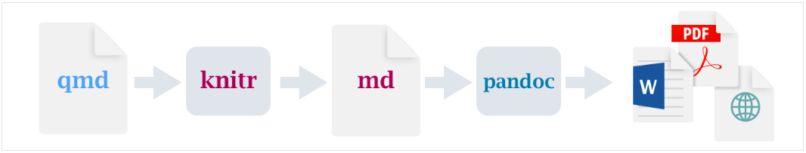
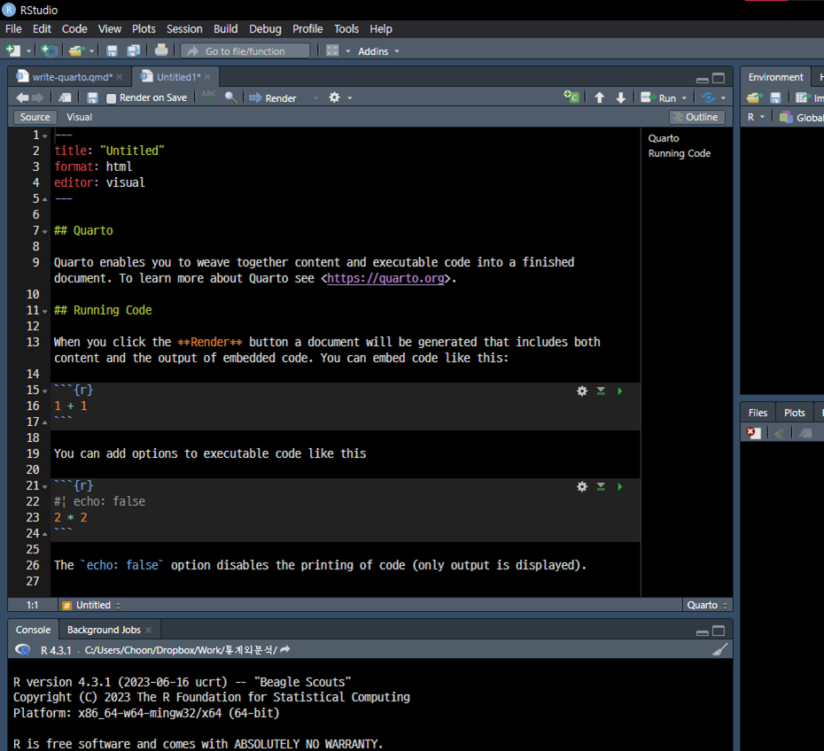
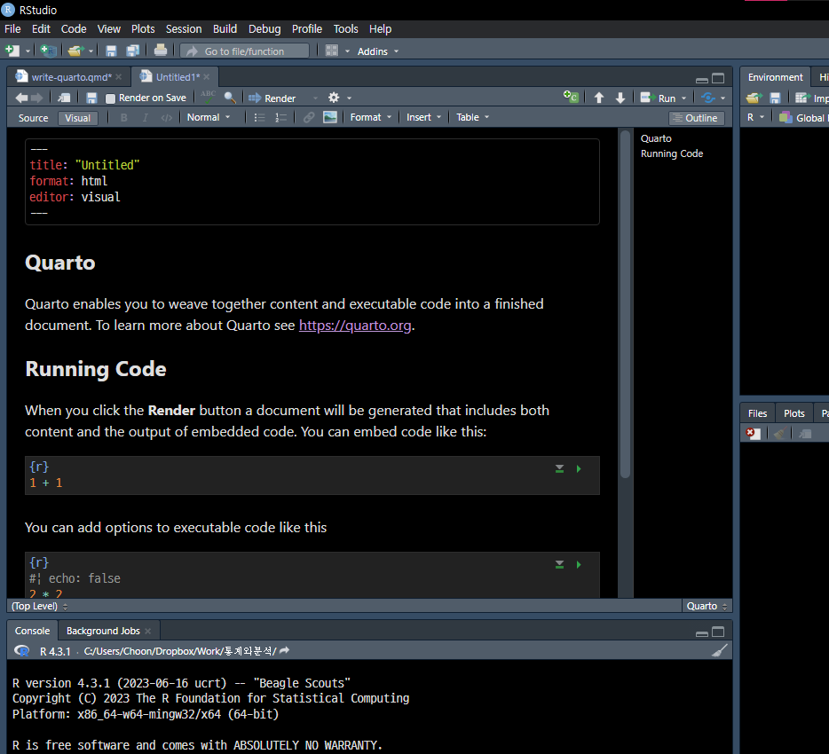
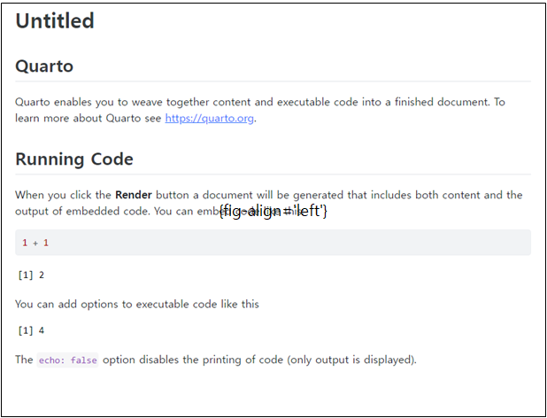
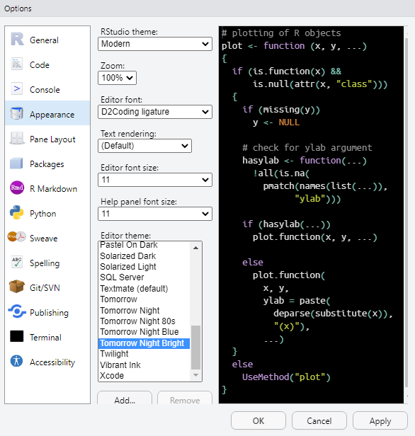

speed dist
Min. : 4.0 Min. : 2.00
1st Qu.:12.0 1st Qu.: 26.00
Median :15.0 Median : 36.00
Mean :15.4 Mean : 42.98
3rd Qu.:19.0 3rd Qu.: 56.00
Max. :25.0 Max. :120.00 4 Quarto 사용하기
4.1 Quarto로 보고서 작성
마크업 Markup 이라는 컴퓨터 언어가 있습니다. 컴퓨터 언어지만 워드프로세서 기능을 하므로 일반 컴퓨터 언어와 달리 사용하기가 매우 쉽습니다. 그걸 쉽게 개선한 언어가 마크다운 Markdown 이고, 그걸 R용으로 더 쉽게 개선한 것이 R 마크다운입니다. 그러니 R 마크다운은 사용하기가 정말로 편합니다. 이걸 한 번 더 개선해서 R뿐만 아니라 다양한 컴퓨터 언어에 사용하도록 만든 범용이 Quarto입니다. “Quarto”는 출판업계 용어이며, 인쇄에 사용하는 큰 종이를 두 번 접어 1/4 크기로 만든, 책 크기를 뜻한답니다. 복사에 흔히 사용하는 A4 용지보다 약간 큰 크기입니다.
콰르토는 워드 프로세서입니다. 말하자면, 아래한글이나 MS 워드와 같은 기능을 합니다. 그러나 일반 워드프로세서는 글을 작성하는 즉시 출력 형태가 화면에 그대로 보이지만, 콰르토는 그걸 실행하고 (render) 난 결과물이 출력물이라는 겁니다. 즉 실행하고 출력물을 봐야 비로소 결과를 알 수 있습니다. 물론 R Studio의 Visual 모드를 사용하면 출력물의 형태를 어느 정도 실시간으로 미리 볼 수 있으나 한계가 존재합니다.
콰르토의 좋은 점은 그 안에서 R 이나 파이썬을 포함한 몇 개의 컴퓨터 언어를 사용할 수 있다는 겁니다. 그래서 보고서 안에서 R을 실행하고 그 결과를 표나 그래프로 즉각적으로 포함할 수 있습니다. 또 다른 특징은 포맷이 일정한 틀을 지닌다는 점입니다. 즉 미리 정한 표준 포맷을 사용하므로 시간과 노력을 절약하고 다른 이들과 협업이 쉽다는 겁니다. 그래서 앞으로 직장에서 콰르토를 많이 사용할 것으로 예상합니다. 물론 미리 정한 포맷을 사용하므로 어느 정도 개성있는 포맷은 포기해야 합니다. 그렇지만 일반 사용자가 만들 수 있는 포맷보다는 아주 훨씬 훌륭합니다.
4.1.1 콰르토의 작동 단계
콰르토로 문서를 작성하고 렌더 Render를 클릭하면 원하는 최종 문서로 출력합니다. 이때 .qmd 파일이 .md (Markdown) 파일이 되고 또 pandoc 파일로 번역되어 최종 문서를 출력합니다. 최종 문서는 주로 웹페이지인 .html 파일로 출력하지만 .pdf 나 MS 워드 .docx 파일로 출력할 수도 있습니다.

4.1.2 콰르토 시작하기
새 콰르토 문서를 만드는 가장 편한 방법이 RStudio를 이용하는 겁니다. RStudio를 열고 메뉴 왼쪽 위 File > New File > Quarto Document 를 차례로 클릭하면 새 문서를 가져옵니다.
콰르토는 R 스튜디오에 포함되어서 별도로 설치할 필요가 없습니다. 혹시 New File 에서 나타나지 않으면 설치가 안 된 것일 수 있으니, 콰르토 사이트에 가서 다운로드해 설치하면 R 스튜디오에 나타납니다. (https://quarto.org)
R스튜디오에서 File > New File > Quarto Document 를 클릭하면 콰르토 파일이 형성되니까 바로 사용합니다. 콰르토 파일을 맨 처음 생성하면 관련 패키지를 설치해야 (install) 할 수도 있습니다. 만일 그렇다면 그냥 설치하면 됩니다.
콰르토 새 파일을 열면 제일 위에 아래와 같이 YAML 언어가 써 있습니다. 이것은 ---로 아래 위로 둘러싸인 부분입니다. ---와 첫 줄 사이에 빈 줄이 없어야 합니다.
---
title: "Untitled"
---YAML 언어는 두 가지 기능을 합니다. 첫째는 한 컴퓨터 언어에서 다른 컴퓨터 언어로 데이터를 전해주는 역할입니다. 여기서는 콰르토 언어에서 마크다운 언어를 거쳐 최종 아웃풋을 만드는 Pandoc 언어로 포맷과 관련한 메타 데이터를 전달합니다. 둘째는 전달하는 정보를 사람이 알아보기 쉬운 형태로 작성하는 겁니다. 위의 YAML 언어도 척 보면 무슨 말인지 알 수 있습니다. R 마크다운의 단점 중 하나가 YAML 언어를 다루기 힘든 것이었는데 콰르토에서는 다루기 쉽게 되었습니다.
사실 새 문서 첫 머리의 YAML 부분이 없어도 문제없이 작동합니다. 여러분이 작성하는 파일은 기본적인 것이니까요. YAML은 주로 콰르토 파일의 아웃풋에 관련한 내용이며, 현재 단계에서는, 그냥 그런 것이 있다고 받아들이면 됩니다.
아래는 세줄 짜리 YAML 예입니다. html은 웹페이지로 출력하라는 명령이고 visual은 R 스튜디오에서 Visual 에디터 모드를 사용한다는 겁니다. R 스튜디오에서 에디터 모드는 언제든 바꿀 수 있습니다. 만일 워드 파일 docx 로 출력하려면 format: html을 format: docx로 수정합니다.
---
title: "Hello, Quarto"
format: html
editor: visual
---아래는 Quarto 새 파일을 열었을 때 나오는 화면입니다. 위의 둘은 각각 Source 모드와 Visual 모드이고, 아래는 편집 창 바로 위 가운데의 Render 버튼을 눌렀을 때 Viewer 탭 패널에 나타나는 최종 출력물입니다. Rendering은 Quarto 파일이 저장되어야 가능하므로 아마도 파일이름을 넣어 저장하라는 창이 먼저 뜰 겁니다.



위의 편집화면이 둘 다 까맣게 나오지요? 그건 눈부심을 방지하려고 편집 화면의 테마를 그렇게 설정한 겁니다. 아래 그림에서 Editor theme을 Tomorrow Night Bright로 선택한 결과입니다. Editor font도 D2 coding ligature로, default가 아닌 걸로 따로 설치하고 선택했습니다. 한글은 편집 화면 글자가 그게 예쁘게 나온다고 합니다. 혹시 여러분도 변경하려면 R Studio 맨위 메뉴 띠에서 Tools > Global Options.. > Appearandce 창으로 가서 해당 옵션을 선택하고 OK 버튼을 클릭하세요.

4.2 콰르토 편집 방법
여기에 나오는 편집 방법은 Quarto/Markdown에서 사용하는 방법입니다. R Studio를 보면 스크립트 패널 바로 위 왼쪽 끝에 Source 와 Visual 에디터 버튼이 있습니다. 여기에 지금부터 나오는 내용은 Source 모드에서 사용하는 것입니다. Visual 모드에서는 그 줄에 나타나는 여러 버튼들을 사용하면 편리합니다. 물론 두 에디터 모드는 언제든지 버튼을 눌러서 서로 편집방법을 바꿀 수 있습니다. 초보자는 Visual 모드를 사용하는 게 편리합니다. 익숙해지면 아마도 Source 모드가 더 편해질 겁니다.
4.2.1 본문 내용, 줄바꿈
본문은 그냥 타이핑해서 넣으면 됩니다. 출력문의 폰트와 크기는 원래 디폴트로 정한 것으로 나타납니다. 다르게 하려면 YAML 파일이나 옵션을 변경해야 하는데 좀 복잡할 수 있으니 그냥 디폴트를 사용하는 걸 권장합니다.
띄어쓰기를 할 때 편집하는 본문에서 한 칸을 띄나 두 칸을 띄나 Quarto는 출력문에서 한 칸을 띕니다. 즉 .qmd 파일에서는 두 칸 또는 그 이상 칸을 띈 부분은 html 등 출력문에서는 한 칸 띈 것으로 나타납니다.
마찬가지로 본문에서 Enter 키를 쳐서 줄을 바꾸어도 Quarto는 줄을 바꾸지 않은 것으로 인식합니다. 즉 Enter 키를 쳐서 줄을 바꾼 것이나 바꾸지 않고 그냥 한 줄로 죽 쓴 것이나 출력물은 동일합니다.
문단을 나누고 싶으면, 즉 아래한글이나 MS 워드에서 Enter 키를 친 것과 동일한 결과를 가져오고 싶으면, Enter 키를 두 번 쳐서 앞 줄과 뒷 줄 사이에 빈 줄이 하나 들어가면 됩니다. 빈 줄이 하나건 둘이건 출력물은 동일한 결과가 나옵니다.
만일 문단을 나누지 않고 그냥 줄바꿈을 하고 싶으면, 즉 아래한글이나 MS 워드에서 Shift+Enter 키를 친 것과 동일한 결과를 가져오고 싶으면, 줄바꿈 전의 줄 마지막에 빈칸을 두 개나 그 이상 넣으면 줄바꿈을 합니다. 또는 줄바꿈 전의 줄 마지막에 <br> 이라는 html 태그를 직접 넣으면 됩니다.
Important
위에 적은 것처럼 Quarto에서 빈칸이, 일반적인 아래한글이나 워드를 사용할 때와 역할이 좀 다른 경우가 있습니다. 주의하세요!
4.2.2 섹션 제목
h1부터 h6까지 표현할 수 있으며, #의 갯수로 표현합니다. 6개까지 가능합니다.
# chapter title
## section title
### subsection title
#### header4 titlechapter title은 장 chapter의 제목이며 제일 큰 폰트로 나타납니다. section title은 절 section 의 제목이며 장보다는 작은 폰트입니다. 그 아래 소제목들도 #의 갯수에 따라서 폰트의 크기가 상대적으로 작아집니다.
4.2.3 코드청크
```를 아래 위로 넣어서 표시합니다. `는 백틱 backtick 이라 부르고 자판 왼쪽 위 구석에 있습니다. 코드청크 블락은 단축키 Ctrl+Alt+i 를 누르면 자동으로 본문에 삽입됩니다. 또는 메뉴의 Code > Insert Chunk 를 사용합니다.
Visual 에디터 모드에서는 에디터 창 바로 위의 Insert 단추를 클릭해서 코드청크를 넣어도 됩니다. 대체로 단축키 Ctrl+Alt+i 의 사용이 가장 간편합니다.
옵션의 종류는 아래와 같습니다. 모두 Render 단추를 눌렀을 때 출력의 결과에 대한 옵션입니다. 옵션 앞에는 모두 #|가 붙어야 합니다. 코드청크 오른 위의 조그만 삼각형 실행버튼을 누르면 코드청크가 실행하는데, 그때는 옵션과 관계없이 실행합니다.
include: false: 코드를 실행하지만 코드와 결과는 마지막 아웃풋에 출력하지 않는다. 코드의 결과는 다른 청크에서 사용할 수 있다. (예: 변수나 그래프를 만들고 그걸 다른 청크에서 사용)echo: false: (코드를 실행하지만) 코드를 아웃풋에 출력하지 않는다.eval: false: 코드를 실행하지 않는다. (코드는 아웃풋에 나타난다.)warning: false: 코드를 실행해서 나타난 경고를 아웃풋에 출력하지 않는다.error: true: 청크에서 에러가 나도 R Markdown 문서를 계속 실행한다collapse: true: 청크 안의 각 코드 실행 결과를 나누지 않고 한 곳으로 몰아 output에 출력한다message: false: 코드를 실행해서 나타난 메시지를 아웃풋에 출력하지 않는다.result: "hide"문자로 된 실행 결과물을 output에 안 넣는다.fig-show: "hide": 그래프를 output에 안 넣는다fig-cap: "내용": 코드를 실행해서 얻은 그래프에 캡션을 단다.
아래 두 개의 청크 옵션 결과를 비교해봅시다.
```{r}
#| echo: false
summary(cars)
```위와 같이 echo: false 옵션을 주면 아래처럼 코드는 출력하지 않고 결과만 출력합니다.
이번에는 eval: false 옵션을 봅니다. 아래처럼 적습니다. 그러면 eval: false는 코드는 출력하지만 실행하지 않으므로 결과는 나타나지 않습니다.
```{r}
#| eval: false
summary(cars)
```코드 청크에 이름(id)을 붙일 수 있고, 캡션(제목)을 붙여 나중에 자동으로 그래프에 번호가 붙습니다. 이때 그래프 이름(id)은 반드시 fig- 가 앞에 붙어야 합니다. 만일 코드청크가 테이블을 그리는 것이라면 이름(id) 앞에 반드시 tbl- 가 붙어야 합니다.
이름을 붙인 것은 본문 다른 곳에서 링크할 수 있습니다. 이렇게 코드 청크에 이름을 붙이고, 본문의 다른 곳에서 @fig-pressureplot라고 적으면 Figure 4.2 로 출력합니다. 클릭하면 그 플롯으로 이동합니다.
```{r}
#| label: fig-pressureplot
#| fig-cap: "이것은 플롯 제목"
plot(pressure)
```
4.2.4 폰트 스타일
_나 *가 한 번이면 기울인 이탤릭체, 두 번이면 굵은 볼드체입니다.
__굵게__
**굵게**
_기울여 쓰기_
*기울여 쓰기*
~~취소선~~
윗첨자^2^
아래첨자~2~굵게
굵게
기울여 쓰기
기울여 쓰기
취소선
윗첨자2
아래첨자2
4.2.5 링크 넣기
아래의 첫 줄처럼 적으면 뒷 줄처럼 출력합니다. 여기서는 “쿼르토 가이드”란 글귀가 인터넷 콰르토 사이트와 링크되었습니다. 링크된 글자들을 클릭하면 그 사이트로 이동합니다. []와 () 사이에 빈칸이 있으면 안됩니다.
[쿼르토 가이드](https://quarto.org/docs/guide/)를 참조하세요
쿼르토 가이드를 참조하세요.
같은 사이트를 여러 번 링크할 때 아래처럼 이름/번호를 넣어주고 나중에 본문 아무곳이나 그 이름/번호를 정의해주면 편합니다. 청크 아래에 출력이 나와있는데, 출력에서 [1]과 [1]: https://commonmark.org/help/는 나타나지 않습니다.
아주 간단히 마크다운을 배우려면 [여기][1]를 클릭해주세요.
[1]: https://commonmark.org/help/아주 간단히 마크다운을 배우려면 여기를 클릭해주세요.
4.2.6 그림 넣기
아래처럼 그림을 넣을 수 있습니다. 아래 첫 줄은 사이트에서 그림을 가져오는 코드고 그 아래 그림이 가져온 그림입니다. 둘째 줄처럼 자신의 폴더에서 그림을 넣어도 됩니다. []와 (), 그리고 {}는 붙여야 합니다. 즉 사이에 빈칸이 있으면 안됩니다.
{fig-align='left'}

{fig-align='left'}
그림에 링크를 걸 수 있습니다. 아래의 첫 줄처럼 콰르토 파일에 적고 출력한 다음에, 출력한 그림을 클릭하면 그 사이트로 갑니다. 만일 그림의 제목을 넣지않고 그냥 []을 적으면 그림만 출력합니다. 아래의 그림은 제목이 없이 그림만 있는 예이며, 그래서 그림을 클릭하면 Quarto 사이트로 갑니다.
[](https://quarto.org)
4.2.7 인라인 코드 넣기
일반글 속에 r 코드를 넣을 수 있습니다. 코드 앞뒤에 `를 붙이면 됩니다. 이것은 간단한 계산을 한다던지, 특히 변수를 불러와서 변수값을 출력할 때 아주 편리합니다. r 코드는 앞에 r을 붙입니다. 만일 python이면 `python code`라고 적습니다. 아래는 청크에서 계산하고 그 값을 본문에 출력하는 예입니다.
```{r}
month_sale <- 18,000,000
```
"이번 달의 매출액은 `r month_sale`원입니다."로 적어 넣으면,
"이번 달의 매출액은 18,000,000 원입니다."로 출력합니다. 4.2.8 수식 넣기
수식을 넣는 방식은 두 가지가 있습니다. 하나는 일반 문장 속에 들어가는 겁니다 $를 수식 양 끝에 하나씩 넣으면 됩니다. 별도의 줄에 들어가는 방식은 $$를 수식 양 끝에 넣은 겁니다.
$a^2 + b ^ 2 = c^2$: 문장 안에 수식을 LaTEx 를 이용해서 이처럼 \(a^2 + b ^ 2 = c^2\) 넣는다$$a^2 + b ^ 2 = c^2$$: 새 줄을 만들어 그 중앙에 수식을 넣는다
\[a^2 + b ^ 2 = c^2\]
4.2.9 수평선 넣기
---를 입력하면 수평선을 그릴 수 있습니다.
결과는 아래와 같습니다.
4.2.10 리스트, 표, 그림 넣기
글머리 기호와 들여쓰기를 자동으로 하는 걸 리스트 list 라고 합니다.
* 하나 1
* 하나 2
+ 아래하나 1
+ 아래하나 2
* 하나 3위처럼 적으면 아래처럼 출력합니다.
- 하나 1
- 하나 2
- 아래하나 1
- 아래하나 2
- 하나 3
글머리 번호를 붙이려면 문장 맨처음에 숫자와 마침표를 차례로 넣습니다.
1. 하나 1
2. 하나 2
i) 아래하나 1
ii) 아래하나 2
1. 하나 3첫 머리에 숫자만 붙으면 번호가 달라도 알아서 순서대로 번호를 답니다. 여기서 i)의 들여쓰기는 반드시 네 자, 또는 두 탭을 해야합니다. 글머리 기호는 두 자 들여쓰면 되지만, 숫자는 네 자 들여쓰기입니다.
- 하나 1
- 하나 2
- 아래하나 1
- 아래하나 2
- 하나 3
4.2.11 테이블 넣기
아래처럼 하여 표를 그릴 수 있습니다. | 로 구분하고 -(하이픈)에 각각 왼쪽, 양쪽, 오른쪽에 : 을 붙여서 왼쪽 정렬, 가운데 정렬, 오른쪽 정렬을 합니다. :을 붙이지 않으면 디폴트는 왼쪽 정렬입니다.
|제목|내용1|내용2|내용3|
|:---|:---: |---:|---|
|왼 정렬|중앙 정렬|오른 정렬|디폴트(왼)|
|왼 정렬|**볼드체 가능**|오른 정렬|디폴트(왼)|
|왼 정렬|[색 가능]{style="color: green"}|오른 정렬|디폴트(왼)|
: 테이블 제목 {#tbl-table-id}위 내용 중에 색가능은 본문의 일부글 색을 지정할 때 사용합니다. 맨 아래 줄은 테이블의 제목입니다. 아래가 결과입니다.
| 제목 | 내용1 | 내용2 | 내용3 |
|---|---|---|---|
| 왼 정렬 | 중앙 정렬 | 오른 정렬 | 디폴트(왼) |
| 왼 정렬 | 볼드체 가능 | 오른 정렬 | 디폴트(왼) |
| 왼 정렬 | 색 가능 | 오른 정렬 | 디폴트(왼) |
테이블 제목은 없어도 됩니다. 테이블 제목은 두고 번호만 붙이지 않으려면 위에서 {#tbl-table-id} 를 안 넣으면 됩니다. 테이블 제목과 테이블 id 사이에 한 칸 이상의 빈칸이 있어야 합니다. 줄 양 옆 맨끝의 |는 없어도 상관없습니다. 없어도 동일한 출력을 합니다.
위의 표 그리기는 단순 표 그리기입니다. 격자 표 그리기 Grid Table 를 이용하면 더 정교한 표를 그립니다.
+---------------------+----------+
| Property | Earth |
+=============+=======+==========+
| | min | -89.2 °C |
| Temperature +-------+----------+
| 1961-1990 | mean | 14 °C |
| +-------+----------+
| | max | 56.7 °C |
+-------------+-------+----------+
: Grid Table 의 예| Property | Earth | |
|---|---|---|
| Temperature 1961-1990 | min | -89.2 °C |
| mean | 14 °C | |
| max | 56.7 °C | |
위의 테이블은 격자 테이블 중에서도 좀 복잡한 형태의 예입니다. 칸 수를 조정한 형태입니다. 물론 칸 수가 동일한 형태도 더 쉽게 가능합니다. 단순 격자 테이블과 달리 격자 테이블은, 위의 예처럼, 네모난 형태를 정확하게 맞춰야 출력이 제대로 될 수도 있습니다.
4.2.12 다이아그램 넣기
쿼르토는 mermaid 언어를 이용해서 다이아그램을 넣을 수 있습니다. 만일 위에서 아래로 그리려면 LR (left \(\rightarrow\) right) 대신에 TD를 (top \(\rightarrow\) down) 넣습니다.
```{mermaid}
%%| label: fig-diagram-exm
%%| fig-cap: "다이어그램 예"
%%| fig-align: "left"
flowchart LR
A[Hard edge] --> B(Round edge)
B --> C{Decision}
C --> D[Result one]
C --> E[Result two]
```flowchart LR
A[Hard edge] --> B(Round edge)
B --> C{Decision}
C --> D[Result one]
C --> E[Result two]
옵션 표현이 달라요
여기 코드청크 mermaid 언어에서 옵션을 주는 표현은 %%|입니다. 코멘트는 %%입니다. #|를 사용하는 r과 살짝 다르니까 혼동하지 말고 사용하세요.